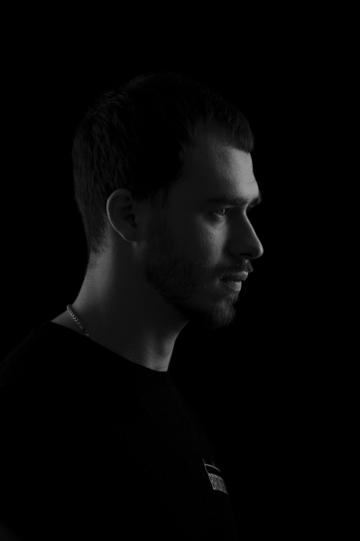

Brian Bullock
Brian's mission is to “Improve Mental Health and Prevent Disease through Nutrition Meditation and Active Lifestyles”. He comes from a life that was in a rapid downward spiral, bad health, poor lifestyle, partying with drugs and alcohol and grinding through his own mental battles which that lifestyle put him in.
He managed to come out on the other side and made a commitment to create the cleanest supplements available on the market and share his story of growth and transition to all that can relate to his story.
Check out Adam’s company Life Grip